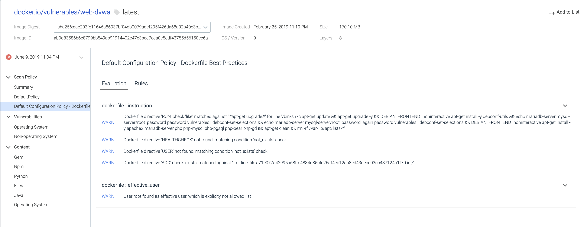

Sysdig On-Premises Release Notes
Release 3.0.0, December 19, 2019
Upgrade Process
Supportability Matrix
Sysdig Platform has been tested and qualified against the following:
Supported Upgrade From | 2.3.0, 2.4.1, 2.5.0 |
Platform | Version |
|---|---|
Vanilla Kubernetes | 1.13.4, 1.15.3 and 1.16.0 |
OpenShift | 3.11, 4.1 and 4.2 |
GKE | v1.14.6-gke.13 |
EKS | v1.14-eks.7 |
Rancher | v2.3.3 |
IBM | Unqualified |
PKS | Unqualified |
Agent | Version |
|---|---|
sysdig/agent | 0.93.1 |
Components | Replicated | Kubernetes with Statefulsets |
|---|---|---|
Redis | 4.0.12.7 | 4.0.12.7 |
MySQL | 5.6.44.0 | 8.0.16.2 |
ElasticSearch | 5.6.16.15 | 5.6.16.15 |
Cassandra | 2.1.21.16 | 2.1.21.16 |
RDS | n/a | 8.0.16 |
Postgres (image scanning) | n/a | 10.6.11 |
Anchore (image scanning) | n/a | 0.5.1. |
NATS Exporter | n/a | 0.6.0.1 |
NATS Streaming | n/a | 0.16.2.1 |
Related Documents
Installation | Upgrade | |
|---|---|---|
Replicated | ||
Kubernetes | Installer-based: | Installer-based: |
Manual: | Manual: |
Sysdig Secure
Activity Audit (Beta)
The Activity Audit in Sysdig Secure allows you to browse a live stream of activity from your Kubernetes containers and nodes. Audit takes the highly detailed data from syscalls and Kubernetes audit logs captured at the agent level, and makes it always-on, searchable, and indexed against your cloud-native assets.
This stream includes executed commands, network activity, and kubectl exec requests to the Kubernetes API. The Activity Audit allows users to view different data sources in-depth for monitoring, troubleshooting, diagnostics, or to meet regulatory controls (SOC2, NIST, PCI, etc).
Flexible filtering and scoping to help you focus on whatâs relevant: Filters allow you to search, sort, and surface meaningful data and connections as they are needed. You can filter by data source type, data source attributes (like command name or Kubernetes user) and dynamic Kubernetes scope

Automatically trace a kubectl exec session : The built-in trace functionality allows you to isolate and trace a kubectl exec access to a pod, automatically correlating the original Kubernetes user and IP that accessed the pod with the activity that was performed during the interactive session, including commands and network connections.

Note
Activity Audit is a Preview Beta feature. Contact your customer success manager to learn more about rolling out this feature.
Kubernetes Policy Advisor (Beta)
With the Kubernetes Policy Advisor, Sysdig Secure auto-generates Pod Security Policies (PSPs) to significantly decrease the time spent configuring Kubernetes Policies. Strict security policies reduce risk, but can also break applications. Sysdig tests the impact of pod security policies through simulations, enabling teams to adjust misconfigurations before shifting to production. There are three main features that comprise the Kubernetes Policy Advisor:
Auto generation: Sysdig Secure can parse any Kubernetes yaml file that includes a pod spec to generate a tailor-made PSP based on the configuration.
Simulations: Start a simulation of the auto-generated PSP or any user-inputted PSP to see what pods would have been blocked from running if this PSP had been actively applied to the cluster.

Events and tuning: Each pod/activity that would have violated the PSP will generate an event. Within the event details, users can see information about potential modifications they may need to make to the policy or the pod configuration.

Scanning Improvements
New Scanning Rules
File attributes can now be verified as part of the image scan analysis. A specific file can be validated against a node or sha256 hash.

Scale Improvements to Scanning Reporting
No query conditions are required as part of the Package and Policy Queries.
Google Distro-less OS
Support for images based on Google distro-less OS, including detection of base OS/version and installed OS dpkg packages.
Sysdig Monitor
Overview Is GA
Overview is now generally available. Overview leverages Sysdig's unified Kubernetes data platform to monitor, secure, and troubleshoot your Kubernetes clusters and workloads.
Notice
Please contact your Sysdig Technical Account Manager or email support to enable Overview for on-premises environments.

Major highlights of Overview GA include but are not limited to:
Multi-cloud view of the health, risk, and capacity of your Kubernetes infrastructureâ a single pane of glass for Kubernetes Clusters, Nodes, Namespaces, and Workloads across a multi- and hybrid-cloud environment. You can easily filter by any of these entities and view associated events and health data. View the infrastructure organized by Clusters, Nodes, Workloads
Shows metrics prioritized by event count and severity, allowing you to get to the root cause of the problem faster.
Drill down to Dashboards for instant insights.
To learn about the capabilities of the Overview feature, see Overview.
Enhanced Out-of-the-box Dashboards
In an attempt to improve the Dashboards experience, the following changes have been introduced:
The following Dashboards are added:
Kubernetes Cluster Overview: Provides nodes and workloads availability and highlights the high-level health of your Clusters. It also summarizes resources consumption (CPU, memory) across Nodes and Namespaces to pinpoint possible anomalies and node disk utilization
Kubernetes Node Overview: Provides availability of the Nodes, indicating potential issues reported by Kubernetes; a summary of resource (CPU and Memory) allocation and utilization, as well as Network and Disk utilization.
Kubernetes Namespace Overview: Provides a high-level summary of availability, and resource allocation and utilization across all the Workloads in the selected Namespace.
Kubernetes Deployment Overview: Provides a detailed summary of pod status, pod restarts, as well as resource allocation and utilization across pods for each Workload.
Kubernetes StatefulSet Overview: Provides a detailed summary of pod status, pod restarts, as well as resource allocation and utilization across pods for each StatefulSet.
Kubernetes DaemonSet Overview: Provides a detailed summary of pod status, pod restarts, as well as resource allocation and utilization across pods.
Kubernetes Job Overview: Provides a detailed summary of job status, completion trend, pod restarts, as well as resource allocation and utilization across pods.
Kubernetes ReplicaSet Overview: Provides a detailed summary of pod status, pod restarts, as well as resource allocation and utilization across pods for each ReplicaSet.
Kubernetes Pod Overview: Provides a detailed summary of pod status, pod restarts, and resource allocation and utilization in a selected pod.
Kubernetes Workloads CPU Usage and Allocation: Helps you verify that CPU requests are properly configured and actual utilization is expected.
Kubernetes Workloads Memory Usage and Allocation: Helps you verify that memory requests are properly configured and actual utilization is expected.
Kubernetes CPU Allocation Optimization: Helps you verify that infrastructure resources are available for future needs and are not wasted.
Kubernetes Memory Allocation Optimization: Helps you verify that infrastructure resources are available for future needs and are not wasted.
The following Dashboards are retained:
Health Overview (applicable to all the objects in the environment)
Horizontal Pod Autoscaler (the default Dashboard when selecting an HPA)
Resource Quota
Service Health (the default dashboard when selecting a service)
Cluster and Node Capacity
The following Dashboards are removed:
State Overview
Daemonset State
Namespace State
Stateful State
Nodes State
Deployment State
Deployment Health
Nodes Health
Namespace Health
Pod State
Pod Health
Replica Set Health
For more information, see Pre-Defined Dashboards
Filtering Events by Scope
Events are now filtered by Scope to show the most relevant Events in Explore and Dashboards. This is an extension of the existing Event Scope functionality. You can toggle between showing Event feed from the entire infrastructure and only from the particular scope you are interested in within the infrastructure. Event scoping for Dashboards and Explore is enabled by default.

Filter Events by Scope in Dashboards
By default, Events are filtered to show only the relevant ones. However, you can turn the filtering off and see Events from the complete scope. To do so:
Click the Dashboard Settings (three dots) icon and select Events.
Use the toggle button to turn off Filter events by dashboard Scope.

Click Save.
Similarly, you can filter Events by Scope in Explore.
What's n/a?
The Sysdig Monitor UI displays n/a in several scenarios associated with labeling. The Explore UI has now been enhanced to add a tooltip for n/a to help you understand the scenario. See The Meaning of n/a for more information.
Release 2.5.0, October 29, 2019
Upgrade Process
Kubernetes and OpenShift environments upgrade to 2.5.0 using the new installer tool (see below).
Supported Upgrade Path: 2.3.0, 2.4.1
Sysdig Platform
New Installer Tool for Kubernetes/OpenShift Environments
With this release, Sysdig platforms can be installed and upgraded using a semi-automated installer tool that greatly simplifies the installation process. Available for Kubernetes and OpenShift environments.
SeeInstaller (KubernetesOpenShift) and Installer Upgrade (2.5.0+) for details.
Enhancement: New Documentation Site at docs.sysdig.com
Sysdig's documentation platform has been upgraded and moved to docs.sysdig.com.
Improvements include:
Look and feel: Updated to match the rest of the Sysdig branding
Search: Enhanced search speed, accuracy, and ease
Structure and content: Enhancements to content have been added and are being continuously updated
Feedback: Buttons on each page enable users to communicate directly with the documentation team.
Sysdig CLI
The Sysdig CLI provides an easy way to interact with the cli via the command line. Read more here.
Usage:
Run it without parameters to get a list of all the commands.
$ sdc-cli
Usage: sdc-cli [OPTIONS] COMMAND [ARGS]...
You can provide the monitor/secure tokens by the SDC_MONITOR_TOKEN and
SDC_SECURE_TOKEN environment variables.
Options:
-c, --config TEXT Uses the provided file as a config file. If the config
file is not provided, it will be searched at
~/.config/sdc-cli/config.yml and /etc/sdc-cli/config.yml.
-e, --env TEXT Uses a preconfigured environment in the config file. If
it's not provided, it will use the 'main' environment or
retrieve it from the env var SDC_ENV.
--json Output raw API JSON
--version Show the version and exit.
--help Show this message and exit.
Commands:
alert Sysdig Monitor alert operations
backup Backup operations
capture Sysdig capture operations
command Sysdig Secure commands audit operations
compliance Sysdig Secure compliance operations
dashboard Sysdig Monitor dashboard operations
event Sysdig Monitor events operations
policy Sysdig Secure policy operations
scanning Scanning operations
settings Settings operations
profile Profile operations
Sysdig Monitor
Ability to "Favorite" a Dashboard
Users can click the star icon to mark a "Favorite" dashboard, which will then be listed under "My Favorites" in the Dashboard view.

Sysdig Secure
In-Line Scanning
Images can now be analyzed locally before they are pushed to a registry. This has a few key benefits to users.
Images can be analyzed before theyâre pushed to a registry and reduce registry cost
Customers using the Sysdig Secure SaaS offering donât need to expose their registry to our SaaS for images to be scanned
For OpenShift users, the in-lince scan option can be integrated into the S2I process to scan images without needing to expose a local cluster registry via a route
Learn more and access the script here: https://github.com/sysdiglabs/secure-inline-scan
SSO Configuration Pages Available in Secure
A UI for configuring Single Sign-On for Sysdig Secure is now available from the Settings menu. See Authentication and Authorization (On-Prem Options).
New Package Reports
Package name/version are now grouped together to provide easy parsing of all CVEâs associated with a package and the images using that package.
New Trigger Parameters for CVSS Score
Image Vulnerabilities can now be evaluated against their CVSS (Common Vulnerabilities Scoring System) score. If a vulnerability is =, <;>, <=, or >= to a specific score, then the rule can trigger a warn/stop action.

Time Ranges Updated
The default time range options have been updated in Sysdig Secure.
The default time ranges are now set to:
10 MinutesÂ
30 Minutes
1 HR
6 HRs
1 Day
3 Days
To look at a custom window of time, use the manual time window.
Sysdig Secure Summary Dashboard in Sysdig Monitor
Sysdig Monitor includes default dashboards that provide metrics about number of agents installed, active policies, events that have occurred, and the policies that have triggered them. Use these dashboards to identify trends, report on coverage, or facilitate the tuning process.

Release 2.4.1, September 18, 2019
Upgrade Process
Review the Migration Path tables in On-Premises Upgrades
Supported upgrade path: 2.3.0
Sysdig Platform
Secure Authentication for Cassandra and Elasticsearch on Replicated
Cassandra and Elasticsearch datastores now have an extra layer of security on Replicated. Sysdig Replicated install allows you to enable authentication and secure communication between Sysdig backend components and the Elasticsearch or Cassandra datastores. For more information, see Install with Replicated.
[BETA] Audit Logging
The following APIs have been introduced to support administrators to view a log of user activities and modifications to the components in the system:
AppAttributes
AuditEvents
Audit logs stand for chronologically cataloged events to provide a history of operational actions and to mitigate challenges. The ability to trace an event back to its origin provides proof of compliance, operational integrity, and protection from unsolicited use. For more information, see Audit Sysdig Platform.
Known Issues
If you want to use Audit logging and have MySQL in your Kubernetes HA environment, run kubectl -n sysdigcloud delete pod -l role=worker to ensure Audit logging works as expected. This issue is observed only in Kubernetes HA environments.
Sysdig Monitor
New Default Kubernetes Grouping
Groupings for Kubernetes have been modified. This updated Grouping is available to new teams. Default groupings are immutableâ-they cannot be modified or deleted other than by copying. Modifying a copy is allowed.
New Groupings:
Clusters and Nodes (
cluster.name > node.name > pod.name > container.name)Deployments (
cluster.name > namespace.name > deployment.name > pod.name > container.name)Services (
cluster.name > namespace.name > service.name > pod.name > container.name)Statefulsets (
cluster.name > namespace.name > statefulset.name > pod.name > container.name)Daemonsets (
cluster.name > namespace.name > daemonset.name > pod.name > container.name)ReplicaSets (
cluster.name > namespace.name > deployment.name > replicaset.name > pod.name)HPAs (
cluster.name > namespace.name > hpa.name > pod.name > container.name)
For more information, see Grouping, Scoping, and Segmenting Metrics.
Units for Metrics
The format of metric units are the same for the following:
The CPU and Memory metrics for Host and Container.
Kube-state CPU and Memory metrics.
 |
Introducing the same format now makes the comparison of those metrics easier on a chart.
Container Segmentation
Sysdig now supports segmenting all net.* metrics at container or pod level by low level net.* dimensions, such as net.http.url or net.http.status.code. Container-based teams now display segmentations for net.http.* metrics as expected. The net.http.url and net.http.status.codes are displayed if you select a container-based team as it does for a host-based team for the same cluster.
Enhanced Event Notification
The ability to customize the subject and body of alert notifications with variables has been extended to Event notifications. Event titles and notification messages are in sync in the following cases:
Event feed on the Events page
Event overlay on Dashboards page
For more information, see Events.
Default Dashboard for Cluster and Node Capacity
Kubernetes Cluster and Node Capacity Dashboard has been refreshed to add actual usage of CPU and Memory compared to Requests, Limits and Allocatable capacity.
 |
Aggregation for Kubernetes Nodes Health
Aggregation method has been refreshed for Kubernetes Node metrics. The Kubernetes Node Health dashboard has been updated with metric aggregations that are 'summed' across all containers running on the node to reflect accurate node level data.
Bug Fixes
Export CSV/JSON was missing columns, not all data was exported as expected. All columns from the dashboard should exist in the exported output.
All data and columns are is now exported as expected.
Sysdig Secure
Policy Editor
*Please upgrade to an agent version 0.92.0 or greater
This UX overhaul brings three major improvements for every Sysdig Secure user:
Runtime policies can import any number of security rules. You can scope the security policy using container, cloud and Kubernetes metadata.
Tighter Falco integration, directly from the web UI. You will be able to define a new trigger condition or append to the list of forbidden external IPs just clicking on the rule.
A more structured way to group, classify and lookup rules, following the standard Cloud native procedure: tags and labels.
Rules Library
Visualize your runtime rules properties in just a glance:
Where this rule comes from (Published By). The security team can instantly recognize whether a rule came from a specific Sysdig update, from a custom rules file created within the organization or from an external rules source (like the Falco community rules).
When was the last time it was updated (Last Updated). You can use this information to audit your rules or if you schedule periodic updates, to confirm when last happened.
Rule tags: An effective method for organizing your rules. You can use these tags to describe the targeted entity (host, k8s, process), the compliance standard it belongs to (MITRE, PCI, CIS Kubernetes) or any other criteria you want to use to annotate your rules.
 |
Falco Lists
Easily browse, append, and re-use lists to create new rules. Lists can also be updated directly via API if users want to add existing feeds of malicious domains, or IPs.
 |
Falco Macros
Easily browse, append, and re-use macros to create new rules.
 |
Image Scanning Reports
Overview
Please contact Sysdig Support to enable this feature
The reports feature allows users to query the contents of a scan against a static or run-time scope to generate a report that shows the risk, exposure, or components of an image.
Use cases could include:
A new CVE has been announced, let me find all the running images in my US East Cluster that are exposed to that CVE
Show me all images within my Google Container registry that have the tag prod and have a vulnerability with a fix that's more than 30 days old
Show me all images with a high severity vulnerability with a fix that are running in my billing namespace
Image Scanning - View Scan Results
Scan Results Page - The existing repositories page has been renamed "Scan Results" this page also includes new capabilities to filter based on where the images are deployed, and to easily browse/expand the different repositories to see the image:tag's that were evaluated and their results
 |
Whitelist labels available in vulnerabilities view - If a vulnerability has been added to a whitelist then that status is reflected in the Vulnerability report within the scan results.
Event Forwarding
Sysdig Secure can forward policy events to tools like Splunk or events can be forwarded via syslog as an easy way to send policy events to any downstream SIEM.
Release 2.3.0, July 29, 2019
Upgrade Process
Review the Migration Path tables in On-premise Upgrades.
Supported upgrade paths: 1929, 2435.
Important Note for Kubernetes Upgrades
Due to the new Secure Elasticsearch and Cassandra feature, Kubernetes installations must follow an Expanded Upgrade process.
Warning
This version of Sysdig On-Premise requires Elasticsearch to be at 5.6.x, which is done automatically when you follow the Expanded Upgrade process.
If you are running your own instance of ES, you will need to update it to 5.6.x.
Replicated Upgrades
For Replicated installations, the upgrade instructions are here: Upgrade Replicated Installations.
Sysdig Platform
Option to Secure Elasticsearch and Cassandra (Kubernetes only)
It is now possible to secure Elasticsearch and the Cassandra DB with password authentication and/or SSL/TLS protection. See Securing Elasticsearch and Securing Cassandra for details.
Sysdig Monitor
Enhanced Dashboard Menu
The Dashboard menu features a drawer-style popover that displays on-demand to provide maximum real estate for your Dashboards. The menu displays an alphabetical list of Dashboards you own and those shared by your team. With the popover menu, you can add new Dashboards and search for existing ones. Click a Dashboard name to access the relevant Dashboard page where you can continue with the regular Dashboard settings.
 |
Customize Alert Notification Template
Sysdig Monitor alerts now provide an option to customize the messages that are sent with alert notifications in email and other channels, such as Pagerduty and Webhook.
Use the Alert Editor to input dynamic variables, such as hostname, or a hyperlink, and to add custom messages in plain text to the notifications for intended recipients. You can modify both the subject and the body of the alert notification with a hyperlink or a variable. For example, you can add an agent id or a link to a Dashboard to the message. This can help provide context for troubleshooting the errors that triggered the alert.
For more information, see Customizing Alert Notification.
 |
Prometheus Remote Scraping
Sysdig Monitor can now collect Prometheus metrics from remote endpoints with minimal configuration.
Remote endpoints (remote hosts) refer to hosts where the Sysdig agent cannot be deployed, e.g., a Kubernetes master node on managed Kubernetes services such as GKE and EKS, where user workload cannot be deployed. To enable remote scraping on such hosts, simply identify an agent to perform the scraping and declare the endpoint configurations in the agent configuration file.
The collected Prometheus metrics are reported under and associated with the agent that performed the scraping, rather than with a process. See Collecting Prometheus Metrics from Remote Hosts for details
Enhancements to Kafka App Check
Kafka integrations can now support authentication and SSL/TLS. If the authentication or SSL/TLS are enabled in Kafka, see Apache Kafka Example 5 for how to enable configuration details on the Sysdig side.
Two New Metrics for Accurate Pod Counts
Two new Kubernetes metrics, kubernetes.namespace.pod.desired.count and kubernetes.namespace.pod.available.count, have been added at the Namespace level to track desired and available pod counts.
Sysdig Secure
Image Scanning: New Trigger Options
New Image Analyzed - Send notifications to different channels when images with a particular registry, repo, tag are scanned.
Some users implement these type of alerts for implementing workflows for image promotion, i.e.
"Push an image from staging to prod registry after a webhook is sent that the image was scanned and it passed."
CVE Update - Be notified whenever a vulnerability is added, updated, or removed from an image within a registry.
Repository Alerts
Receive alerts about activity and changes that occur within your registry. See Manage Scanning Alerts.
 |
Slack Notifications
Sample output of a CVE alert:
 |
Sample output of an image-analyzed alert:
 |
Image Scanning: Policies - New rule parameter available
A new field: Max days since creation is now available. This allows users to only take Stop or Warn actions if a vulnerability has been in the feed for a certain number of days.
For example: Only stop a build if an image has a high-severity CVE with a fix, and the CVE is more than 30 days old.
Image Scanning: Policy Assignments - New compliance audits available
Policy assignments now support the ability to add audit policies to provide a second step of validation of container images. Additional audit policies evaluate images against Dockerfile Best Practices, PCI, and NIST 800-190. These Audit policies have "Warn" actions set by default and are intended to validate compliance/audit use cases and not cause CI/CD builds to fail.
Updated Menu Navigation in Sysdig Secure
The top-menu navigation has been replaced by a context-sensitive drawer-style side navigation bar.
Image Scanning: Scan Results Redesign
Scan results have been expanded to help users get a better idea about the policy evaluation status and vulnerabilities present in an image. This new version of scan results allows the user to
Get a breakdown of the different OS/Non-OS Critical, High, Medium, Low CVEs present in the image
See the different policies the image has been evaluated against
See which specific rules have triggered the most stop/warn actions and identify areas needing attention
 |
A breakdown of the evaluation result has been added to give users a better idea about what has triggered warn/stop actions as part of the evaluation.
In this case, we can look at the Dockerfile Best Practice policy to see the image
Has an effective user of root
Doesn't include a Healthcheck
Uses apt-get upgrade as part of a Run instruction
Includes an ADD instruction
|  |
The Vulnerabilities section also now supports enhanced sorting and filtering by severity level and whether or not a fix is available.
 |
Image Scanning: PDF Reports
PDF reports, which include a summary of the policy evaluation and all vulnerabilities present in the image, can be downloaded from the console.
Bug Fixes
Explore display fix
Fixed an issue where, when the Explore Table had no columns configured, the Explore view showed an error.
Enable/disable alerts fix
Fixed a problem where users were unable to toggle alerts.
Event posting fix
Fixed an issue where events posted in Slack did not appear in the event stream. Now they do.
Monitor Spotlight fix
Fixed issue where Monitor Spotlight incorrectly alerted to update On-Premise releases all the time. Update alert now turns on only when an update is actually available.
Improved access to kube-state metrics
Teams based on âhostsâ (e.g., scoped by
agent.tag.*) will now have access to all host and container data, including kube-state metrics and dashboards. In previous versions, kube-state metrics were not available for host-based teams.
Release 2435, July 24, 2019
Warning
Release 2435 replaces version 2172, 2266 and 2304 which were released on May 28, 2019, June 17, 2019 and June 21, 2019. If you installed 2172, 2266 or 2304, upgrade to 2435.
Upgrade Process
Review the Migration Path tables in On-premise Upgrades.
Supported upgrade paths: 1765, 1929.
(Note that if you installed 2172, 2266 or 2304, please upgrade to 2435. Otherwise, skip 2172, 2266 and 2304.)
Important Note Regarding Dashboard Migration V1 > V2
If you are upgrading from a previous version, the Dashboards will be upgraded from V1 to V2. The process requires 20-30 minutes on large systems, and the environment remains live throughout the rolling upgrade.
DO NOT create or delete dashboards during the upgrade. After upgrading, if you have saved v1 dashboards previously and need to upload them to the v2 environment, see Migrate Saved Dashboards from V1 to V2.
Sysdig Platform Fix
Custom certificates fix
Fixed an install issue caused when using custom certificates.
Release 2304, June 21, 2019
Warning
Release 2304 replaces version 2172 and 2266 which were released on May 28, 2019 and June 17, 2019. If you installed 2172 or 2266, upgrade to 2304.
Upgrade Process
Review the Migration Path tables in On-Premises Upgrades.
Note
Supported upgrade paths: 1765, 1929.
(Note that if you installed 2172 or 2266, please upgrade to 2304. Otherwise, skip 2172 and 2266.)
Important Note Regarding Dashboard Migration V1 > V2
If you are upgrading from a previous version, the Dashboards will be upgraded from V1 to V2. The process requires 20-30 minutes on large systems, and the environment remains live throughout the rolling upgrade.
DO NOT create or delete dashboards during the upgrade. After upgrading, if you have saved v1 dashboards previously and need to upload them to the v2 environment, see Migrate Saved Dashboards from V1 to V2.
Architecture Change in the Containers
In previous releases, there was a single backend container which ran several processes.
As of version 2266, the processes have been divided into unique containers, following container best practices.
Previous:
quay.io/sysdig/sysdigcloud-backend:<earlier release>
New:
Sysdig Platform Fix
Redis Client Fix
Updated an underlying tool (Jedis 2.9.1) to Jedis 2.9.3, to address a bug in the connection pool.
Sysdig Monitor
Manage Notification Frequency for Alerts
Users now have the ability to specify how often they want to be reminded about an alert if the event is unresolved. Available under 'Notify' section of the alert configuration screen. See Alerts.
Advanced Scope Selection
The scope editor (for dashboards, alerts, teams, etc.) has added improved granularity, intelligent scope restriction, and the ability to add custom values on-the-fly. The editor now restricts the scope of the selection for subsequent filters by rendering values that are specific to the selected label. The values that are only relevant to the previous selection are displayed. For more information, see Dashboard Scope.
Ability to Choose Unit of Metric
Sysdig Monitor now automatically detects the type of input and scale for custom metrics. Earlier, custom metrics were marked as numbers on both Explore and Dashboard UI. The UI now supports custom unit scale for custom metrics. The supported units are byte, percent, and time. This enhancement simplifies the mapping of units of measurement with that of integrated application metrics, such as Prometheus. For more information, see Editing the Unit Scale.
Kubernetes Horizontal Pod Autoscaling (HPA) metrics
Support for the following HPA metrics has been introduced: kubernetes.hpa.replicas.min, kubernetes.hpa.replicas.max, k ubernetes.hpa.replicas.current, and k ubernetes.hpa.replicas.desired. For more information, see Resource Usage.
Expose Dashboard Scope in URL
The Dashboard URL can include scope parameters, including scope variables. Users can now share the URL with non-Sysdig Monitor users and allow them to collaborate on dashboard scope. Collaborators with a valid link can change the scope parameters without having to sign in. They can edit either on the UI or in the URL. For more information, see Share a Dashboard.
Sysdig Secure
Image Scanning: Policy Assignments
Policy assignments allow you to specify where your image scanning policies are applied. A policy assignment can include a Registry, Repository, Tag combination and has full wildcard support for each of those fields.
Policy assignments are evaluated in descending order, so be sure to specify the most important policies first.
Examples
To evaluate all images with a âProdâ tag with your Example Prod Image Policy, use the assignment:
*/*/ProdTo evaluate all images from gcr.io with an Example Google Policy, use the assignment:
gcr.io/*/*
Image Scanning: Map Internal Registries (for OpenShift environments)
The recommended way to run an image registry for an OpenShift cluster is to run it locally. The Sysdig agent will detect the internal registry names, but for the Anchore engine to pull and scan the image it needs access to the internal registry itself. There can now set this path in the Registries UI. See Manage Registry Credentials.
Compliance: Custom Report Filters
When running CIS benchmark tests, you can filter your view of the results to show only high-priority items or selected controls.
Bug Fixes
Improved metric aggregation defaults in Explore window
When a metric is first selected on the Explore page, the time and group aggregation will be pre-populated with the most reasonable choice, rather than average/average.
Topology view fixes: Implemented fixes for proper loading of Topology panels in public dashboards, and proper "group by" and 'scope" Topology Views.
See also Visualizing Metrics using Topology View.
Non-root user security enhancements
Added changes to permit running Sysdig applications as non-root user.
Image scanning fix in Sysdig Secure
Bug fix in the Jenkins plugin used to scan images in Sysdig Secure.
Note
For earlier releases, please see Sysdig On-Premises Release Notes, here.
Note
It is recommended to follow upgrade best practices:
Keep upgrades current
Test upgrades in a non-mission-critical or staging environment before rolling into production.